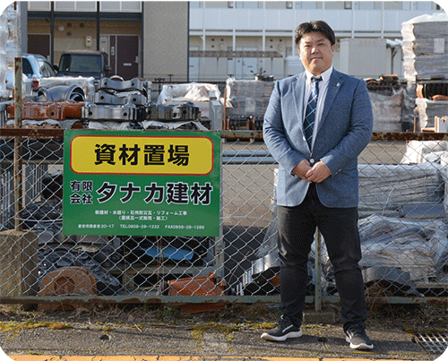
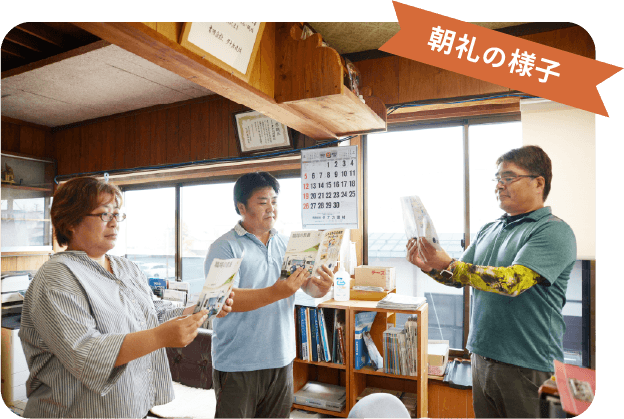

会社情報
ご挨拶
タナカ建材は建材卸業だけでなく、屋根修理や工務店の紹介など幅広く活動しています。
建材屋として培った経験を活かし地域の皆様に無くてはならない会社を目指し、お客様にとって、皆様が
安心して暮らせるお家作りのお手伝いが出来るようベストな選択をご提案させていただきます。
まずはお気軽にご相談ください。全力でサポートさせていただきます。

代表取締役
田中 大樹
経営理念
「感謝と利他の心で地域社会に貢献いたします」
社訓
「誠実」真心を持って仕事に励みます
「協和」互いに信頼し心を合わせます
「躍動」生き生きと働き明るい職場作りを目指します
会社概要
- 会社名
- 有限会社タナカ建材
- 創業
- 昭和61年4月
- (法人設立 昭和62年8月3日)
- 代表者名
- 田中 大樹
- 所在地
- 〒682-0851
- 鳥取県倉吉市西倉吉町20-17
- 電話番号
- (0858)28-1232
- FAX番号
- (0858)28-1289
- 事業内容
- 住宅新建材・瓦の販売
- 住宅設備機器販売・施工
- 内装工事・屋根工事一式
- 外壁工事・防水工事
- リフォーム工事

お客様を明るく笑顔でお迎えする為に、
毎朝欠かさず朝礼を実施しています。
主な取引先
- ケイミューホームテック株式会社 (https://kmewhometech.co.jp)
- 株式会社ノダ (http://www.noda-co.jp)
- 東洋テックス株式会社 (http://www.toyotex.co.jp)
- 株式会社丸惣 (https://www.kawara.co.jp)
- 株式会社シバオ (https://www.shibao.co.jp)
- TOTO株式会社 (http://www.toto.co.jp/index.htm)
- 株式会社ハウステック (https://www.housetec.co.jp)
- 株式会社コロナ (https://www.corona.co.jp)